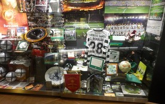

Student: 22319078 - SHEN YUEWEIFinal project for Introduction to Informatics & Computing.
Cristiano Ronaldo was born in Funchal, Madeira. His first professional step was Sporting CP, where his speed and confidence made him stand out as a young player.
At Manchester United, Ronaldo developed from a fast winger into a complete forward. This stage is important because it shows how training and coaching changed his game.
At Real Madrid he became one of the most productive goalscorers in football history. Later, he continued his career at Juventus and kept adding new records.
For Portugal, Ronaldo became captain and a national symbol. His international career is part of why CR7 is recognized far beyond club football.
The biggest part of Ronaldo's career is consistency. He changed leagues, teammates, and roles, but his goal-scoring identity remained clear.
Read moments >>
Shirts, boots, trophies, and museum displays show how one footballer's career can become part of popular sports culture.
View photos >>